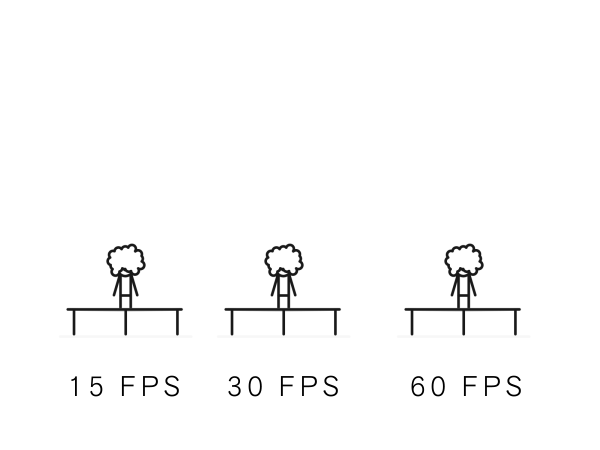
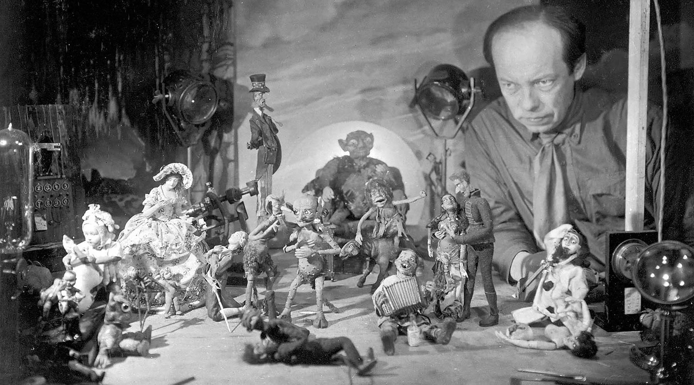

Анимацией называется искусственное представление движения в кино, на телевидении или в компьютерной графике путем отображения последовательности рисунков или кадров с частотой, при которой обеспечивается целостное зрительное восприятие образов.
Анимация, в отличие от видеофильма, использующего непрерывное движение, использует множество независимых рисунков.
Кадры - это рисованные или сфотографированные изображения последовательных фаз движения объектов или их частей. При просмотре последовательности кадров возникает иллюзия оживления изображенных на них статичных персонажей. Для создания эффекта плавного изменения их положения и формы, исходя из особенностей человеческого восприятия, частота смены кадров должна быть не менее 12-16 кадров в секунду. В кино используется частота 24, в телевидении 25 или 30 кадров в секунду.
Синоним слова «анимация» – «мультипликация» – очень широко распространен в нашей стране. Анимация и мультипликация – это лишь разные определения одного и того же вида искусства.
Принятое в мире профессиональное определение «анимация» (в переводе с латинского anima – душа, «анимация» – оживление, одушевление) более точно отражает все современные технические и художественные возможности анимационного кино.
Мультипликация, анимация, мультипликационное кино, анимационное кино - вид киноискусства, произведения которого создаются методом по-кадровой съёмки последовательных фаз движения рисованных (графическая или рисованная мультипликация) или объёмных (объёмная или кукольная мультипликация) объектов.
Искусством мультипликации занимаются мультипликаторы (аниматоры).
Классический вид анимации, при котором художник последовательно прорисовывает на листах бумаги или на прозрачной плёнке каждую фазу движения персонажа (производит «фазовку»), затем каждый рисунок фотографируется, а из получившихся кадров составляется мультфильм. Несколько прозрачных листов пленки с разными персонажами, объектами и фоном могут накладываться друг на друга, образуя слои изображения и облегчая тем самым фазовку, так как объекты и фон могут сдвигаться отдельно, а неподвижные объекты переходить из кадра в кадр без перерисовки.
Кукольная анимация — анимация при помощи кукол-актёров и сцены-макета. Сцена фотографируется покадрово, после каждого кадра в сцену вносятся минимальные изменения, например, изменяется поза куклы. При воспроизведении полученной последовательности кадров возникает иллюзия движения объектов. Этот тип мультипликации впервые возник в России в 1906 году.
Первым русским мультипликатором (1906 год) был Александр Ширяев, балетмейстер Мариинского театра, создавший первый в мире отечественный кукольный мультфильм, в котором изображены 12 танцующих фигурок на фоне неподвижных декораций, изображающих сцену. Фильм снят на 17,5-миллиметровую плёнку. Время по его созданию заняло три месяца. За время создания Ширяев протёр ногами дыру в паркете, поскольку постоянно ходил от кинокамеры к декорации и обратно.
Данные фильмы обнаружены в архиве Ширяева киноведом Виктором Бочаровым в 2009 году. Там же найдены ещё несколько кукольных мультфильмов: «Играющие в мяч клоуны», «Художники Пьеро» и любовная драма со счастливым концом «Шутки Арлекина». Современные мультипликаторы ещё не могут разгадать секреты мультипликатора, поскольку куклы Ширяева не просто ходят по земле, но и прыгают и крутятся в воздухе.
Пластилиновая анимация — вид мультипликации, где фильм изготовляется путём покадровой съёмки пластилиновых объектов, с их модификацией в промежутках между снятыми кадрами.
Песочная анимация — в ней лёгкий порошок (обычно очищенный и просеянный песок, но также соль, кофе, пластиковые гранулы и т. п.) тонкими слоями наносится на стекло и перемешивается, создавая движущуюся картину. Обычно все действия выполняются руками, но в качестве приспособлений могут использоваться и кисточки. С помощью диапроектора или световой доски получающееся изображение можно передавать на экран и записывать.
Трёхмерная компьютерная анимация — вид анимации, производный от компьютерной графики. На сегодняшний день компьютерная анимация имеет очень широкое применение как в области развлечений, так и в производственной, научной и деловой сферах. В трехмерной компьютерной анимации работа ведется не с нарисованным контентом, а с настоящим виртуальным миром. Объекты не рисуются, а моделируются, — это процесс скорее похож на работу гончара, лепящего из простых форм более сложные. Внутри программы есть виртуальное освещение, материалы, законы физики и т. д. Правильно настроив их, можно добиться нужного результата — будь то мультяшная картинка или реалистичное изображение.